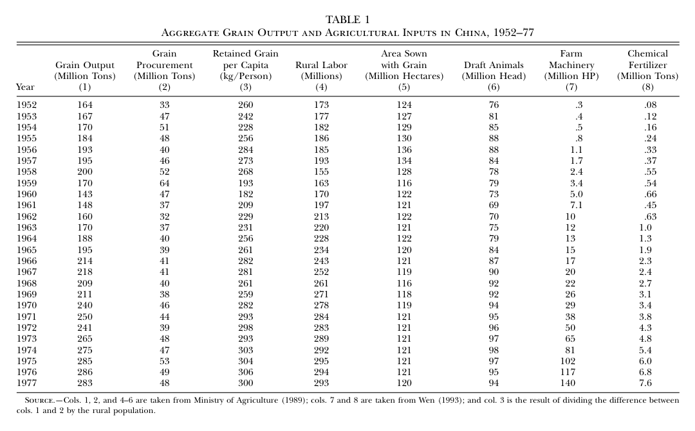
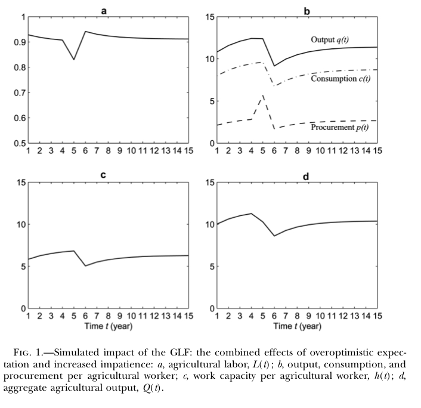
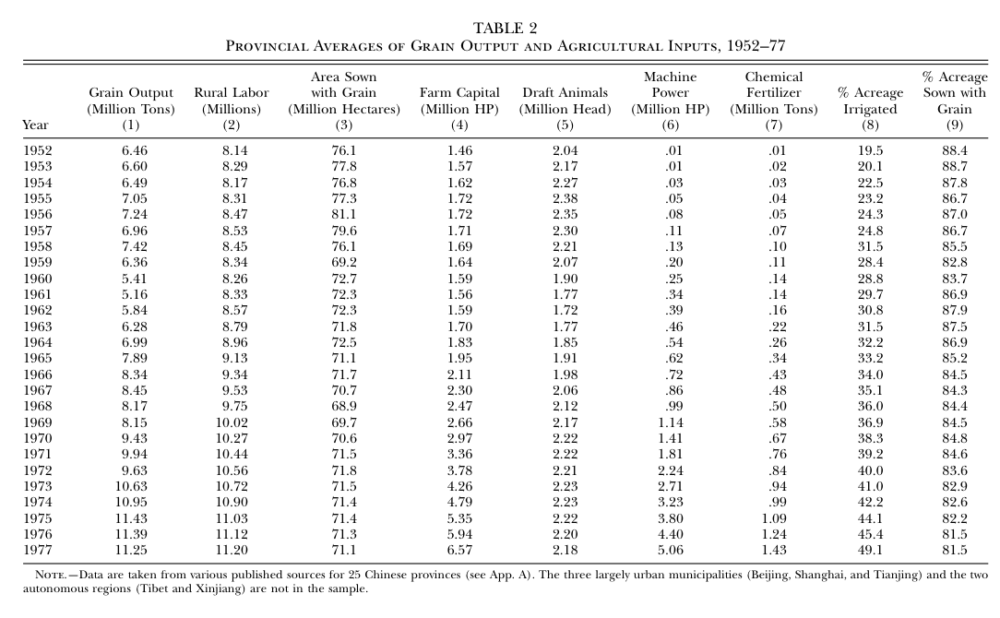
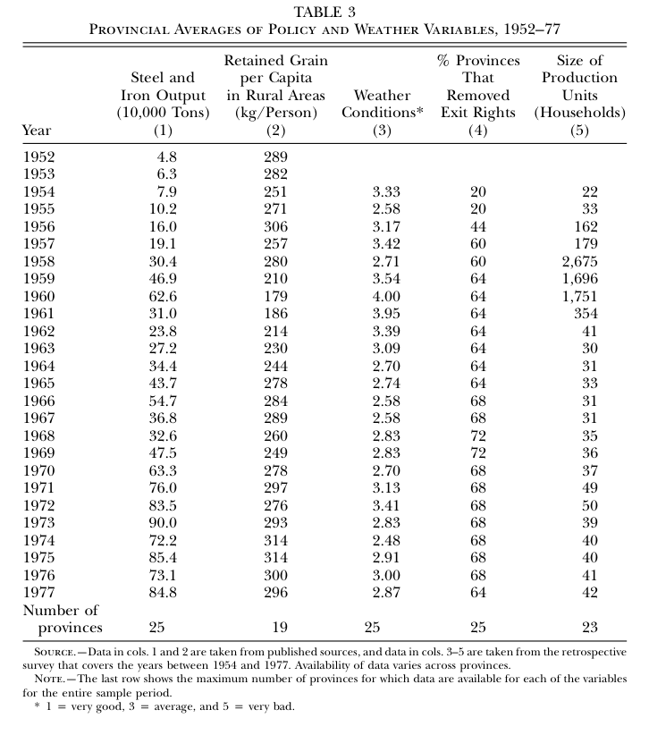
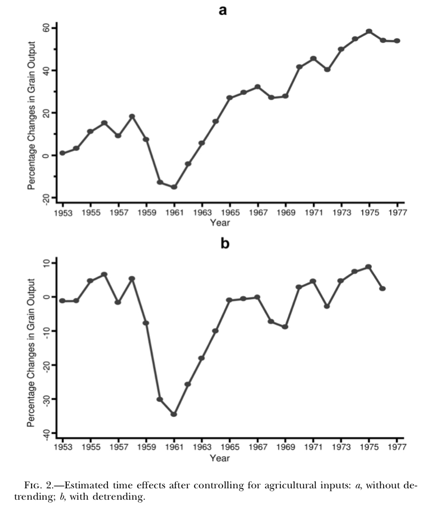
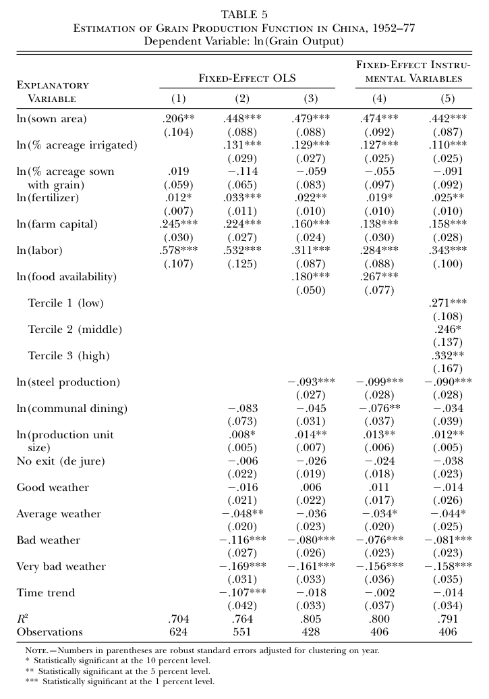
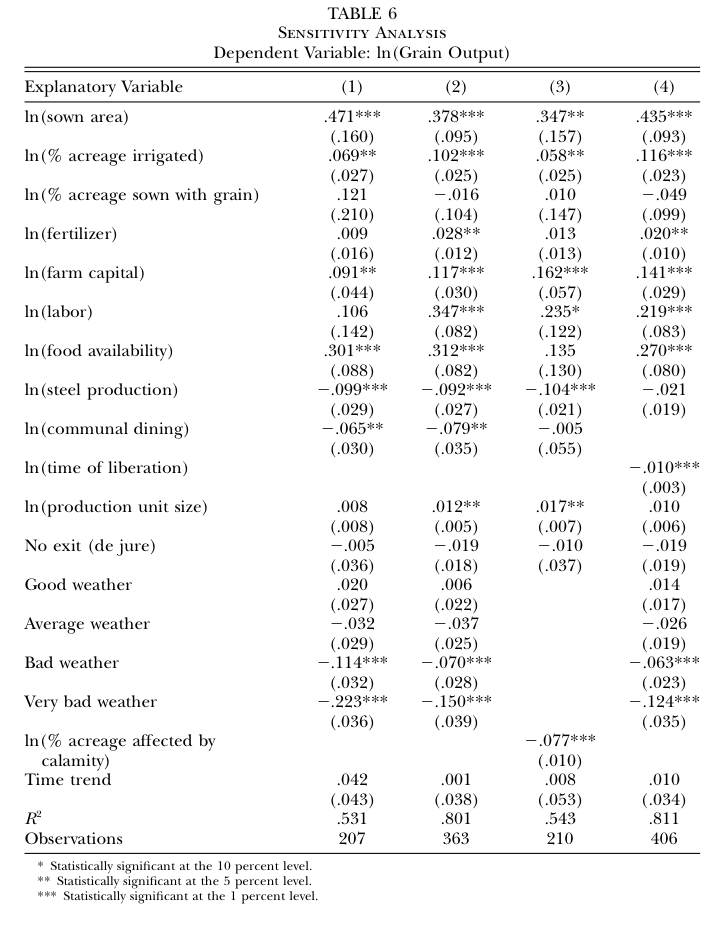
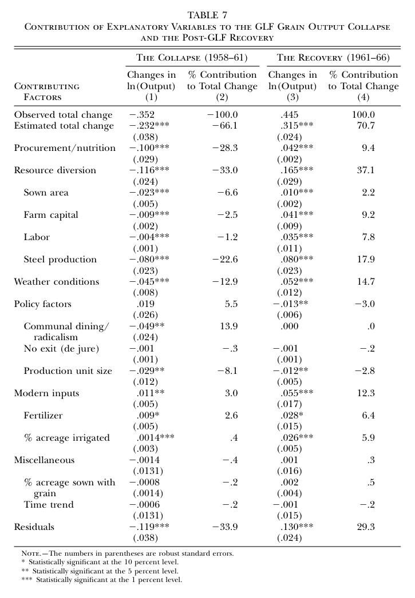

1. 文章问题与主线
文章的逻辑链条可以压缩成一句话：中央计划者错误相信集体化会显著提高农业生产率，同时又更急于工业化，于是把劳动力、土地和资本从农业转向工业，并提高粮食征购；过度征购降低农民口粮，口粮不足削弱体力劳动能力，下一期粮食产量继续下降。
错误预期：集体化被认为会使农业生产率大幅提高。
政策选择：资源转移到工业，同时提高对农村的粮食征购。
营养反馈：留给农民的粮食减少，劳动能力下降。
动态崩溃：当期投入少、下一期体力弱，产量继续下滑。
2. 历史背景与基本事实
新中国成立后，中国仍是高度农业化经济，工业基础薄弱。1952 年以后，政府采用苏联式重工业优先战略。问题在于：重工业投资需要剩余，而当时最主要的可提取剩余来自农业。于是，农业政策承担了双重压力：既要养活农村人口，又要为城市和工业化提供粮食、原料和积累。
1958 年大跃进启动后，政府相信人民公社和集体化能够快速提高农业生产率。地方干部在政治压力下夸报产量，中央基于“粮食已经过剩”的判断，把大量农村劳动力转向工业、钢铁、水利和其他非农项目，并加大粮食征购。
| 指标 | 大跃进前后变化 | 为什么重要 |
|---|---|---|
| 粮食总产量 | 1957 年 1.95 亿吨；1959 年 1.70 亿吨；1960 年 1.43 亿吨 | 这是被解释变量的核心事实：产量不是一次性下降，而是连续恶化。 |
| 征购量 | 1957 年 4600 万吨；1959 年 6400 万吨 | 产量已经下降时征购仍上升，意味着农村留粮被挤压。 |
| 农村人均留存粮 | 1957 年 273 公斤；1959 年 193 公斤；1960 年 182 公斤 | 这是营养与劳动能力机制的经验基础。 |
| 农村劳动力 | 1957 年 1.93 亿；1958 年 1.55 亿 | 体现资源从农业向工业和非农项目转移。 |
| 粮食播种面积 | 1957 年 1.34 亿公顷；1959 年 1.16 亿公顷 | 土地也从粮食生产中被挪出，直接压低粮食产量。 |

方法上为什么先讲事实？
文章不是直接从回归开始，而是先建立“事实模式”：劳动力和播种面积先下降，征购和留粮变化带来滞后的体力下降，产量在政策调整后仍继续低迷。理论模型必须能解释这种时间顺序，实证模型也要把当期投入、滞后营养、天气和制度因素同时纳入。
3. 理论模型：设定、推导与机制
3.1 基本设定
模型有两个部门：农业生产粮食，工业生产工业品。总劳动力标准化为 1。政府每期把 $L_t$ 分配到农业，把 $1-L_t$ 分配到工业。
$Q_t$ 是第 $t$ 期粮食总产量，$a$ 是农业生产率，$h_t$ 是每个农业劳动者的体力或工作能力，$c_t$ 是农民当期粮食消费。关键设定是：农民吃得越少，下一阶段能投入的有效劳动越低。
3.2 农民消费动态
每个农业劳动者的粮食产出是 $af(c_t)$。政府向每个农业劳动者征购 $p_t$，剩下的粮食进入下一期消费：
这条式子是模型的动态核心。过度征购不是只影响当期福利，而是通过 $c_{t+1}$ 影响下一期体力 $h_{t+1}=f(c_{t+1})$，再影响下一期产量。
3.3 工业部门与粮食约束
工业部门采用 Leontief 技术：每生产一单位工业品需要一单位劳动和 $m$ 单位粮食作为中间投入。工业工人还需要粮食配给，每人 $n$ 单位。因此，如果工业部门有 $1-L_t$ 个工人，工业需要的粮食是 $(m+n)(1-L_t)$。
由于政府目标是最大化工业产出，在最优选择下这个约束通常取等号：多征的粮食不会直接提高工业产出，少征则工业部门无法运转。
3.4 从约束中解出农业劳动力
把式 (1) 改写为 $p_t=af(c_t)-c_{t+1}$，代入粮食约束的等号形式：
移项并求 $L_t$：
因此工业劳动力，也就是工业产出，可以写成：
这个表达式说明：政府如果想提高当前工业产出，就要让 $af(c_t)-c_{t+1}$ 更大，也就是当前多征购、让下一期农民消费更低。
3.5 政府目标函数
政府最大化工业产出的贴现和：
$\beta$ 是贴现因子。$\beta$ 越低，政府越急于当前工业化，越愿意牺牲未来农业劳动能力来换取当前工业产出。把式 (3) 代入目标函数：
3.6 欧拉方程推导
定义：
于是目标函数是 $\sum_t\beta^tF(c_t,c_{t+1})$。对中间某一期 $c_t$ 求一阶条件时，$c_t$ 同时出现在上一期项 $F(c_{t-1},c_t)$ 和本期项 $F(c_t,c_{t+1})$ 中：
令 $D(x,y)=af(x)-y$，则 $F=D/(D+m+n)$。对第二个变量求导得到：
对第一个变量求导得到：
代回一阶条件并消去 $m+n$：
把下标整体后移一位，得到论文中的欧拉方程：
欧拉方程的经济含义
左边是多给下一期农民一点消费带来的边际收益：体力提高，未来农业产出提高。右边是跨期征购和工业产出的相对代价。最优政策要求政府在“当前工业产出”和“未来农业劳动能力”之间平衡。
3.7 稳态与大跃进冲击
稳态下 $c_t=c_{t+1}=c_{t+2}=\bar c$，欧拉方程化为：
由于 $f''<0$，稳态消费随农业生产率 $a$ 和政府耐心 $\beta$ 上升而提高。更耐心的政府会少征购，让农民维持更高体力；更高农业生产率也允许农村消费与工业征购同时提高。
论文模拟大跃进时设定 $f(c)=c^\delta$，$\delta=0.85$，$\beta$ 从 0.9 降到 0.8，政府误以为集体化使 $a$ 永久提高 50%，但实际 $a$ 永久下降 2%。模型预测：第 5 年农业劳动力被调走、征购提高；第 6 年消费和体力触底，产量继续下降；政策纠正后，劳动力回流但产量恢复缓慢。

4. 数据与假设检验：变量逐一解释
实证部分使用 25 个省份 1952-1977 年的省级面板数据。北京、上海、天津三个城市型直辖市，以及西藏、新疆两个自治区不在样本内。数据来自公开统计资料和作者 1999 年组织的回溯调查。回溯调查补充了天气、生产单位规模、退出权等公开资料中没有系统记录的变量。
| 变量 | 构造方式 | 含义 | 主要假设 |
|---|---|---|---|
| $Q_{it}$ 粮食产量 | 省 $i$ 年 $t$ 的粮食总产量，包含八类主粮和杂粮 | 被解释变量，实证中使用 $\ln Q_{it}$ | 需要解释 1958-1961 年为何下降、1961-1966 年为何恢复。 |
| $L_{it}$ 农村劳动力 | 农业/农村劳动力数量 | 传统农业投入，也是资源转移的直接指标之一 | 劳动力减少会降低产量，预期系数为正。 |
| $A_{it}$ 播种面积 | 种植作物并预期收获的面积 | 土地投入，注意播种面积可因复种大于耕地面积 | 面积越大，产量越高；粮食播种面积下降反映资源转移。 |
| $K_{it}$ 农业资本 | 农机动力与役畜折算为统一马力单位 | 传统资本投入 | 资本越多，产量越高；大跃进中役畜减少导致资本下降。 |
| $M_{it}$ 化肥 | 化肥使用量 | 现代投入 | 预期正向，但 1950 年代水平较低。 |
| $I_{it}$ 灌溉比例 | 灌溉面积占播种面积比例 | 土地质量调整变量 | 灌溉提高土地效率，预期正向。 |
| $G_{it}$ 粮食播种比例 | 播种面积中用于粮食作物的比例 | 把总农业投入调整为“用于粮食生产的投入” | 如果投入按粮食面积同比例配置，$G$ 会影响有效投入。 |
| $g_{i,t-1}$ 滞后留存粮 | 上一年农村人均留存粮，即产量减征购后按农村人口折算 | 当前农业劳动者可获得食物的代理变量 | 留粮越多，营养越好，体力越强，当前产量越高。 |
| $S_{it}$ 钢铁产量/钢铁激增 | 省级钢铁和铁产出，尤其用 1956 年以后激增部分捕捉大炼钢铁等非农项目 | 不可观测资源转移的代理变量 | 钢铁激增意味着农业劳动被挪走，预期负向。 |
| $W_{it}$ 天气 | 回溯调查中 1-5 级天气：很好、好、一般、坏、很坏 | 自然冲击控制变量 | 相对于“很好”，天气越差，产量越低。 |
| $E_{it}$ 退出权取消 | 若官方规定农民不能退出集体，则取 1 | 集体化激励问题的制度变量 | 取消退出权削弱努力激励，预期负向。 |
| $Z_{it}$ 生产单位规模 | 基本核算单位平均户数 | 衡量集体组织规模 | 理论上不确定：可能有规模经济，也可能有监督和搭便车问题。 |
| $R_{it}$ 公共食堂/激进程度 | 公共食堂参与率，用来代理地方激进政策 | 反映食物浪费和激进政治动员 | 公共食堂和激进政策可能浪费粮食、增加劳动消耗，预期负向。 |

变量解释中最容易混淆的一点
“征购”没有直接以当期征购量进入最终生产函数，而是通过“上一期农村人均留存粮”进入。原因是粮食生产有季节周期：播种和劳动发生时，农民的体力依赖上一季收获后留下来的粮食。这个滞后设计正好对应理论模型中的 $c_{t+1}=af(c_t)-p_t$。

5. 实证模型与识别：每个变量怎么进模型
5.1 基础生产函数
文章先写一个 Cobb-Douglas 粮食生产函数。Cobb-Douglas 的好处是取对数后系数可以解释为弹性，适合回答“某个投入变化 10%，产量大约变化多少”。
$X^*_{it}$ 是“有效投入”，不是简单的投入数量。$u_i$ 是省份固定效应，控制一个省长期不变的地理、土壤、制度和政治差异；$v(t)$ 是时间趋势，控制全国共同的技术变化；$e_{it}$ 是省份年度的特殊冲击。
5.2 为什么要构造“有效投入”
论文的关键不只是问“有多少劳动力”，而是问“有多少真正用于粮食生产且有劳动能力的有效劳动力”。因此，作者把总投入调整成用于粮食生产的投入，再把营养、制度和资源转移嵌入有效劳动。
这里 $X^G$ 表示分配给粮食生产的投入，$G_{it}$ 是粮食播种比例。若粮食播种比例下降，说明更多土地和相关投入转向非粮作物或非农项目。
这条式子把有效劳动拆成几部分：基础劳动力数量、营养决定的体力、生产单位规模、退出权、钢铁激增和公共食堂/激进程度。
$\delta$ 是食物对劳动能力的弹性。若 $\delta$ 很大，说明口粮下降会显著削弱劳动生产率。
土地也要进行质量调整：同样面积的土地，灌溉比例越高，产出能力越强。
5.3 最终回归方程
把有效投入式代回生产函数，得到可估计的固定效应回归：
这条方程的学习重点
表面上看它是生产函数，实际上它是“机制检验”的生产函数。传统投入检验数量效应，$g_{i,t-1}$ 检验营养和体力机制，$S_{it}$ 检验资源转移，$W_{it}$ 控制天气，$E,Z,R$ 检验既有文献提出的制度和激进政策解释。
5.4 为什么用固定效应 IV
固定效应解决的是省份之间长期不变的差异。例如某省土壤更适合种粮、某省长期水利条件更好、某省治理传统不同，这些因素若不控制，可能被误认为政策变量的作用。固定效应相当于让每个省和自己的历史均值比较。
IV，即工具变量解决的是内生性。本文最关键的内生性来自滞后留存粮 $g_{i,t-1}$：它等于上一期粮食产量减征购，因此和滞后产量 $\ln Q_{i,t-1}$ 有关系。在短面板固定效应模型中，这种动态关系会使普通固定效应估计低估营养效应。
本文 IV 用的是什么？论文使用“滞后的外生变量”作为工具变量。它们要满足两个条件：第一，与 $g_{i,t-1}$ 相关，能预测上一期留存粮；第二，不与去均值后的当期省份特殊误差相关。换句话说，IV 主要服务于识别“滞后食物可得性”对当前产量的因果影响。
为什么不用完整年份虚拟变量？因为中央计划下各省政策变量有很强共同时间趋势。若加入年份虚拟变量，它们会吸收大跃进政策共同冲击，与投入和政策变量产生严重多重共线性。文章因此采用较简约的时间趋势 $v(t)=vt$，并报告聚类稳健标准误。

6. 表5：固定效应 IV 核心结果
6.1 表5的列怎么读
| 列 | 估计方式 | 包含变量 | 用途 |
|---|---|---|---|
| (1) | 固定效应 OLS | 传统投入：播种面积、化肥、农业资本、劳动力、粮食播种比例 | 建立基准生产函数。 |
| (2) | 固定效应 OLS | 加入灌溉、制度变量、公共食堂、天气、时间趋势 | 检验既有解释：天气、激进政策、退出权、组织规模。 |
| (3) | 固定效应 OLS | 再加入食物可得性和钢铁生产 | 检验本文核心机制，但仍可能有动态面板偏误。 |
| (4) | 固定效应 IV | 完整模型，使用工具变量处理滞后食物可得性 | 论文核心结果，后续贡献分解也使用这一列。 |
| (5) | 固定效应 IV | 把食物可得性分成低、中、高三组 | 检验营养效应是否存在非线性。 |

6.2 核心列 (4) 的结果与解释
| 变量 | 列 (4) 系数 | 解释 |
|---|---|---|
| $\ln$ 播种面积 | 0.474*** | 播种面积增加 10%，粮食产量约增加 4.74%。土地投入是最强的传统投入之一。 |
| $\ln$ 灌溉比例 | 0.127*** | 灌溉提高土地质量，显著提高产量。 |
| $\ln$ 粮食播种比例 | -0.055 | 不显著，说明在边际上，传统投入大体已经主要配置到粮食生产。 |
| $\ln$ 化肥 | 0.019* | 化肥正向但弹性较小，符合当时现代投入水平较低的背景。 |
| $\ln$ 农业资本 | 0.138*** | 役畜和机器等资本对粮食产出有显著贡献。 |
| $\ln$ 劳动力 | 0.284*** | 基础劳动力数量正向显著；加入营养后，纯劳动力数量弹性低于未调整模型。 |
| $\ln$ 食物可得性 | 0.267*** | 上一年农村留存粮减少 10%，当年产量约下降 2.67%。这是营养和体力机制的关键证据。 |
| $\ln$ 钢铁生产 | -0.099*** | 钢铁激增 10%，粮食产量约下降 0.99%，说明非农动员挤出了农业有效劳动。 |
| $\ln$ 公共食堂 | -0.076** | 公共食堂和地方激进政策显著负向，可能来自粮食浪费与激进动员。 |
| $\ln$ 生产单位规模 | 0.013** | 小幅正向，说明单纯规模变大并没有在这一设定中表现为净负效应。 |
| 取消退出权 | -0.024 | 方向为负但不显著。作者认为可能因为变量只度量法律上的退出权，低估了事实上的强制集体化。 |
| 坏天气 / 很坏天气 | -0.076*** / -0.156*** | 相对“很好天气”，坏天气和很坏天气显著降低产量，但不是唯一主因。 |
星号表示统计显著性：* 10%，** 5%，*** 1%。对数变量的系数可近似理解为弹性。
6.3 结果分析：为什么表5支持本文机制
第一，资源转移得到支持
钢铁生产系数为 -0.099 且显著。钢铁生产在这里不是为了研究钢铁行业，而是作为大炼钢铁、水利工程、土地开垦等非农项目的代理变量。它越高，说明农业劳动力和注意力被越多地转出粮食生产。
第二，过度征购的滞后营养效应得到支持
食物可得性系数为 0.267 且显著。由于它是上一年留存粮，结果说明上一年征购过高会通过营养不足影响当年劳动能力。作者进一步用 $0.267/0.284$ 得到劳动能力对食物的弹性约为 0.94，说明低营养环境下食物对体力劳动效率的作用很强。
第三，天气重要但不足以解释全部崩溃
坏天气和很坏天气确实显著降低产量，但后续贡献分解显示天气只解释 12.9% 的下降。也就是说，天气是冲击之一，不是核心机制。
列 (5) 的非线性检验
作者把食物可得性分成低、中、高三组，检验“越饿时食物对劳动能力越重要”是否在省级数据中明显出现。三组食物弹性约为 0.79、0.72、0.97，均显示食物重要，但由于标准误较大，不能拒绝三组弹性相同。因此文章的结论是：在宏观省级数据中，营养弹性整体很高，但没有强证据表明它明显非线性。
7. 表6：稳健性检验逐项解释
稳健性检验的目的不是“多跑几张表”，而是检查核心结果是否依赖某个样本、某种变量口径或某个代理变量。表6全部使用固定效应 IV，只改变样本或关键变量定义。
| 表6列 | 做法 | 为什么要做 | 解决的问题 | 结果怎么读 |
|---|---|---|---|---|
| (1) | 把样本期缩短为 1952-1966 | 1966 年后进入文化大革命，农业和政治环境可能出现新冲击。 | 检验核心结论是否依赖 1967-1977 年这段后期样本。 | 食物可得性 0.301***、钢铁生产 -0.099***，核心方向仍在；但样本变小，$R^2$ 从约 0.80 降到 0.53，天气负效应更强，标准误更大。 |
| (2) | 剔除死亡率最高的四川、安徽、贵州 | 这些省份可能有极端政策、激进领导或未观测因素。 | 检验结果是否被少数灾情最重的省份“带出来”。 | 显著变量基本保持同方向：食物可得性 0.312***、钢铁生产 -0.092***，说明核心结果不是只由极端省份驱动。 |
| (3) | 用官方“受灾播种面积比例”替代回溯调查天气等级 | 调查天气等级可能存在省际口径不一致。 | 检验天气变量测量误差是否改变政策变量结论。 | 官方灾害变量 -0.077***，钢铁生产 -0.104*** 仍显著；食物可得性降为 0.135 且不显著。作者提醒：官方灾害变量可能把政策失败造成的歉收也归入天气，且样本量从 406 降到 210。 |
| (4) | 用“解放时间”替代公共食堂参与率作为地方激进程度代理 | 公共食堂参与率只有 1959 年数据，可能不能完整代表地方激进主义。 | 检验激进政策代理变量替换后，核心机制是否仍成立。 | 食物可得性 0.270*** 仍显著，解放时间 -0.010***；整体结果未系统性偏离表5。不过钢铁生产系数变小且不显著，说明资源转移代理在这一替代设定中较敏感。 |

稳健性检验的共同逻辑
表6每一列都围绕一个潜在质疑：样本时期是否特殊、极端省份是否支配结果、天气变量是否测错、激进政策代理是否任意。结果显示，营养机制和大部分政策变量方向较稳定；但天气口径和激进程度代理会影响部分系数大小，这正是稳健性检验应当揭示的边界。
8. 表7：产量崩溃与恢复的贡献分解
8.1 方法是什么
贡献分解不是重新估计模型，而是使用表5列 (4) 的估计系数，计算每个变量在某一时期的实际变化会带来多少产量变化。核心公式是：
如果变量不是对数形式，例如天气虚拟变量，则使用：
若多个变量属于同一类，例如资源转移包括播种面积、资本、劳动力和钢铁生产，则把它们的贡献相加：
最后把该类因素造成的 $\Delta\ln Q$ 除以实际观察到的总变化 $\Delta\ln Q_{58-61}$，得到百分比贡献：
为什么用对数变化分解
回归模型的被解释变量是 $\ln Q$，解释变量大多也是对数。系数乘以对数变化，正好对应“这一变量实际变化对 log 产量变化的预测贡献”。这种方法能把估计结果转化为历史时期的量化解释。
8.2 崩溃期：1958-1961
1958-1961 年，观察到的省均粮食产量对数变化为 -0.352。模型解释了 -0.232，约占总下降的 66.1%。

| 因素类别 | 对 $\Delta\ln Q$ 的贡献 | 占观察总变化 | 解释 |
|---|---|---|---|
| 资源转移 | -0.116*** | -33.0% | 最大贡献项。尤其是钢铁生产一项贡献约 -22.6%，说明非农动员是核心。 |
| 过度征购/营养 | -0.100*** | -28.3% | 上一期留存粮下降削弱劳动能力，是第二大原因。 |
| 天气条件 | -0.045*** | -12.9% | 恶劣天气确实加剧危机，但贡献小于两类政策因素。 |
| 政策/制度因素 | +0.019 | +5.5% | 组内因素相互抵消。公共食堂关闭带来正向抵消，生产单位规模变化带来负向影响。 |
| 现代投入 | +0.011** | +3.0% | 化肥和灌溉的增加部分缓冲了下降，但幅度小。 |
| 残差 | -0.119*** | -33.9% | 仍有约三分之一下降未被模型解释，提示数据和机制仍不完全。 |
8.3 恢复期：1961-1966
1961-1966 年，观察到的对数产量变化为 +0.445。模型解释 +0.315，约占总恢复的 70.7%。恢复主要来自资源重新回到农业、天气改善、现代投入增加以及留粮恢复。
| 因素类别 | 对 $\Delta\ln Q$ 的贡献 | 占恢复 | 解释 |
|---|---|---|---|
| 资源转移逆转 | +0.165*** | 37.1% | 劳动力、资本和注意力重新回到农业，是恢复的最大来源。 |
| 天气改善 | +0.052*** | 14.7% | 自然条件改善帮助产量反弹。 |
| 现代投入 | +0.055*** | 12.3% | 化肥和灌溉继续增加，对恢复有正向贡献。 |
| 征购/营养恢复 | +0.042*** | 9.4% | 征购稳定和农村留粮改善使劳动能力恢复。 |
| 政策/制度因素 | -0.013** | -3.0% | 部分制度因素仍拖累恢复。 |
贡献分解的核心结论
崩溃不是单一原因造成的，但两类政策因素最重要：资源转移解释 33.0%，征购和营养解释 28.3%，合计约 61%。这也解释了为什么政策纠正后恢复缓慢：劳动力可以调回来，但营养和体力恢复需要时间，生产率损失也不会立刻消失。
9. 结论与方法启示
本文结论是，大跃进粮食危机主要是中央计划的系统性失败。错误的农业生产率预期、急于工业化的目标函数、强制性的资源调配、过度征购以及缺乏纠错机制共同造成灾难。天气是重要外部冲击，但不是主要解释。
这篇文章最值得学习的方法
第一，用理论模型明确机制和时间顺序，而不是直接堆变量。第二，把理论机制翻译成可观测变量：资源转移用劳动力、播种面积、资本和钢铁生产代理，营养机制用滞后留存粮代理。第三，用固定效应 IV 处理省份异质性和动态面板偏误。第四，用贡献分解把回归系数转化成历史解释，回答“各因素到底贡献多少”。
因此，读表5、表6、表7时，重点不只是看显著性，而是看方法链条是否连贯：理论机制是否可检验，变量是否对应机制，识别策略是否解决关键偏误，稳健性是否回应合理质疑，贡献分解是否把估计结果转化为可解释的历史数量。